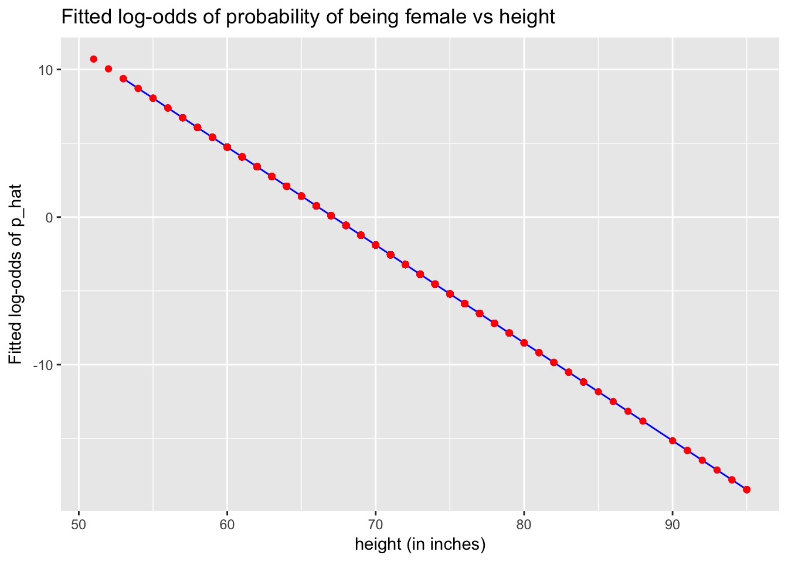
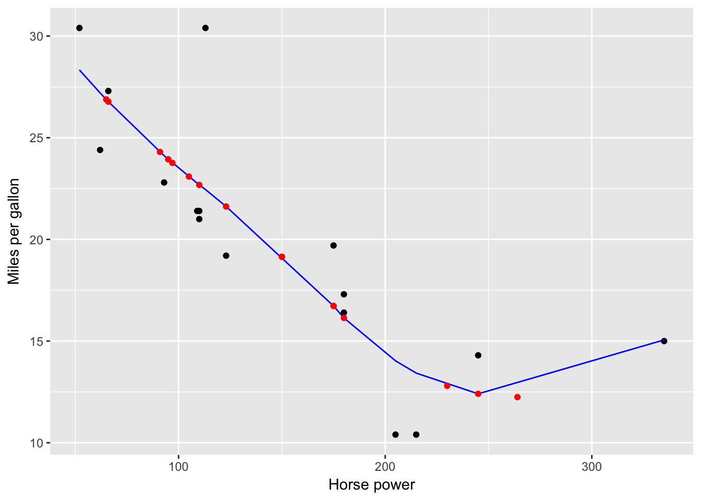

Categorical outcomes (\(\geq\) 2 levels)
library(tidyverse)
iris <- iris %>%
as_tibble() %>%
# Add ID column:
mutate(ID = 1:n()) %>%
select(ID, Species, Sepal.Length, Sepal.Width)
Classification and regression trees
Fit/train model
library(rpart)
model_formula <- as.formula(Species ~ Sepal.Length + Sepal.Width)
tree_parameters <- rpart.control(maxdepth = 3)
model_CART <- rpart(model_formula, data = iris, control=tree_parameters)
# Alas there is no broom functionality; this won't work
# model_CART %>% broom::tidy()
#
# Use these instead, but they are not that helpful IMO
# print(model_CART)
# summary(model_CART)
# Plot
plot(model_CART, margin=0.25)
text(model_CART, use.n = TRUE)
title("Predicting iris species using sepal length & width")
box()
Get fitted probabilities/predictions
Output 1: Get fitted probabilities
p_hat_matrix <- model_CART %>%
predict(type = "prob", newdata = iris)
# Look at a random sample of 5 of them
p_hat_matrix %>%
as_tibble() %>%
sample_n(5)
| 0.9777778 |
0.0222222 |
0.0000000 |
| 0.9777778 |
0.0222222 |
0.0000000 |
| 0.9777778 |
0.0222222 |
0.0000000 |
| 0.0000000 |
0.7222222 |
0.2777778 |
| 0.9777778 |
0.0222222 |
0.0000000 |
# Score/error
MLmetrics::MultiLogLoss(y_true = iris$Species, y_pred = p_hat_matrix)
## [1] 0.4599391
Output 2: Get explicit predictions y_hat based on fitted probabilities with ties broken at random.
y_hat <- model_CART %>%
predict(newdata=iris, type="class")
# Score/error
MLmetrics::Accuracy(y_true = iris$Species, y_pred = y_hat)
MLmetrics::ConfusionMatrix(y_true = iris$Species, y_pred = y_hat)
## [1] 0.7933333
## y_pred
## y_true setosa versicolor virginica
## setosa 49 1 0
## versicolor 3 31 16
## virginica 0 11 39
\(k\)-nearest neighbors
Fit/train model
library(caret)
library(MLmetrics)
k <- 3
model_formula <- as.formula(Species ~ Sepal.Length + Sepal.Width)
model_knn <- caret::knn3(model_formula, data=iris, k = k)
Get fitted probabilities/predictions
Output 1: Get fitted probabilities
p_hat_matrix <- model_knn %>%
predict(newdata=iris, type="prob") %>%
round(3)
# Look at a random sample of 5 of them
p_hat_matrix %>%
as_tibble() %>%
sample_n(5)
| 0 |
1.00 |
0.00 |
| 0 |
0.60 |
0.40 |
| 0 |
0.40 |
0.60 |
| 1 |
0.00 |
0.00 |
| 0 |
0.75 |
0.25 |
# Score/error
MLmetrics::MultiLogLoss(y_true = iris$Species, y_pred = p_hat_matrix)
## [1] 0.2944172
Output 2: Get explicit predictions y_hat based on fitted probabilities with ties broken at random.
y_hat <- model_knn %>%
predict(newdata=iris, type="class")
# Score/error
MLmetrics::Accuracy(y_true = iris$Species, y_pred = y_hat)
MLmetrics::ConfusionMatrix(y_true = iris$Species, y_pred = y_hat)
## [1] 0.8333333
## y_pred
## y_true setosa versicolor virginica
## setosa 49 0 1
## versicolor 0 38 12
## virginica 0 12 38
Binary outcomes (2 levels)
library(tidyverse)
library(broom)
library(okcupiddata)
profiles <- profiles %>%
as_tibble() %>%
# Create binary outcome variable y:
mutate(y = ifelse(sex=="f", 1, 0)) %>%
# Remove heights below 50 inches:
filter(height>50) %>%
# Add ID column:
mutate(ID = 1:n()) %>%
select(ID, sex, y, height) %>%
# Remove all rows with NA missing values:
na.omit()
profiles_train <- profiles %>%
sample_frac(0.5)
profiles_test <- profiles %>%
anti_join(profiles_train, by="ID")
Logistic regression via glm
Fit/train model
model_formula <- as.formula(y~height)
model_logistic <- glm(model_formula, data=profiles_train, family="binomial")
# 1.a) Extract regression table in tidy format
model_logistic %>%
broom::tidy(conf.int=TRUE)
| (Intercept) |
44.5217062 |
0.5064172 |
87.91508 |
0 |
43.536627 |
45.5218320 |
| height |
-0.6630262 |
0.0074967 |
-88.44196 |
0 |
-0.677832 |
-0.6484441 |
# 1.b) Extract point-by-point info in tidy format
model_logistic %>%
broom::augment() %>%
as_tibble() %>%
sample_n(5)
| 0 |
73 |
-3.8792052 |
0.0444372 |
-0.2022700 |
3.92e-05 |
0.8623147 |
4.00e-07 |
-0.2022740 |
| 0 |
70 |
-1.8901266 |
0.0251132 |
-0.5304279 |
7.19e-05 |
0.8623100 |
5.40e-06 |
-0.5304470 |
| 0 |
73 |
-3.8792052 |
0.0444372 |
-0.2022700 |
3.92e-05 |
0.8623147 |
4.00e-07 |
-0.2022740 |
| 1 |
67 |
0.0989519 |
0.0172714 |
1.1356889 |
7.44e-05 |
0.8622905 |
3.37e-05 |
1.1357312 |
| 1 |
64 |
2.0880305 |
0.0312658 |
0.4833888 |
9.59e-05 |
0.8623110 |
5.90e-06 |
0.4834119 |
# 1.c) Extract summary stats info in tidy format
model_logistic %>%
broom::glance()
| 40347.99 |
29956 |
-11136.72 |
22277.44 |
22294.05 |
22273.44 |
29955 |
Predict outcomes for test data
# 2. Make predictions on test data
# Method 1:
# -input: profiles_test is a data frame
# -output: log_odds_hat is a vector of log odds
log_odds_hat <- predict(model_logistic, newdata=profiles_test)
p_hat <- 1/(1 + exp(-log_odds_hat))
# Method 2: All new variables start with a period
model_logistic %>%
broom::augment(newdata=profiles_test) %>%
as_tibble() %>%
mutate(p_hat = 1/(1 + exp(-.fitted))) %>%
sample_n(5)
| 20973 |
m |
0 |
74 |
-4.5422314 |
0.0514535 |
0.0105374 |
| 12564 |
m |
0 |
68 |
-0.5640743 |
0.0172247 |
0.3626053 |
| 403 |
f |
1 |
91 |
-15.8136765 |
0.1768689 |
0.0000001 |
| 282 |
f |
1 |
60 |
4.7401352 |
0.0587949 |
0.9913382 |
| 17173 |
m |
0 |
68 |
-0.5640743 |
0.0172247 |
0.3626053 |
Plot
fitted_model <- model_logistic %>%
broom::augment() %>%
as_tibble() %>%
mutate(p_hat = 1/(1 + exp(-.fitted)))
predictions <- model_logistic %>%
broom::augment(newdata=profiles_test) %>%
mutate(p_hat = 1/(1 + exp(-.fitted)))
# Logistic regression is fitted in log-odds(p) space
ggplot(NULL) +
geom_line(data=fitted_model, aes(x=height, y=.fitted), col="blue") +
geom_point(data=predictions, aes(x=height, y=.fitted), col="red") +
labs(x="height (in inches)", y="Fitted log-odds of p_hat", title="Fitted log-odds of probability of being female vs height")

# Convert back to probability space
ggplot(NULL) +
# Add observed binary y's, and put a little random jitter to the points
geom_jitter(data=fitted_model, aes(x=height, y=y), height=0.05, alpha=0.05) +
geom_line(data=fitted_model, aes(x=height, y=p_hat), col="blue") +
geom_point(data=predictions, aes(x=height, y=p_hat), col="red") +
labs(x="height (in inches)", y="p_hat", title="Fitted probability of being female vs height")
ROC curve
profiles_train_augmented <- model_logistic %>%
broom::augment() %>%
as_tibble() %>%
mutate(p_hat = 1/(1+exp(-.fitted)))
library(ROCR)
# This bit of code computes the ROC curve
pred <- prediction(predictions = profiles_train_augmented$p_hat, labels = profiles_train_augmented$y)
perf <- performance(pred, "tpr","fpr")
# This bit of code computes the Area Under the Curve
auc <- as.numeric(performance(pred,"auc")@y.values)
auc
## [1] 0.9094629
# This bit of code prints it
plot(perf, main=paste("Area Under the Curve =", round(auc, 3)))
abline(c(0, 1), lty=2)

Continuous outcomes
library(tidyverse)
library(broom)
# Continuous outcome:
mtcars <- mtcars %>%
mutate(ID = 1:n()) %>%
select(ID, mpg, hp) %>%
as_tibble()
mtcars_train <- mtcars %>%
sample_frac(0.5)
mtcars_test <- mtcars %>%
anti_join(mtcars_train, by="ID")
Regression via lm
Fit/train model
model_formula <- as.formula("mpg ~ hp")
model_lm <- lm(model_formula, data=mtcars_train)
# 1.a) Extract regression table in tidy format
model_lm %>%
broom::tidy(conf.int=TRUE)
| (Intercept) |
31.5376055 |
2.6367590 |
11.960746 |
0.0000000 |
25.8823198 |
37.1928912 |
| hp |
-0.0703943 |
0.0169128 |
-4.162188 |
0.0009585 |
-0.1066687 |
-0.0341199 |
# 1.b) Extract point-by-point info in tidy format
model_lm %>%
broom::augment() %>%
as_tibble() %>%
sample_n(5)
| 30.4 |
113 |
23.58305 |
1.253290 |
6.816952 |
0.0718647 |
4.436969 |
0.0886861 |
1.5135289 |
| 15.2 |
150 |
20.97846 |
1.181569 |
-5.778458 |
0.0638750 |
4.560087 |
0.0556761 |
-1.2774714 |
| 17.8 |
123 |
22.87910 |
1.202625 |
-5.079105 |
0.0661718 |
4.627432 |
0.0447812 |
-1.1242420 |
| 17.3 |
180 |
18.86663 |
1.352576 |
-1.566629 |
0.0837020 |
4.830333 |
0.0055973 |
-0.3500692 |
| 33.9 |
65 |
26.96197 |
1.721726 |
6.938025 |
0.1356251 |
4.387982 |
0.1998894 |
1.5962133 |
# 1.c) Extract summary stats info in tidy format
model_lm %>%
broom::glance()
| 0.5530556 |
0.521131 |
4.675132 |
17.32381 |
0.0009585 |
2 |
-46.31088 |
98.62177 |
100.9395 |
305.996 |
14 |
Predict outcomes for test data
# 2. Make predictions on test data
# Method 1:
# -input: mtcars_test is a data frame
# -output: y_hat is a vector
y_hat <- predict(model_lm, newdata=mtcars_test)
# Method 2: All new variables start with a period
model_lm %>%
broom::augment(newdata=mtcars_test) %>%
as_tibble() %>%
sample_n(5)
| 14 |
15.2 |
180 |
18.86663 |
1.352576 |
| 4 |
21.4 |
110 |
23.79423 |
1.272486 |
| 21 |
21.5 |
97 |
24.70936 |
1.374342 |
| 15 |
10.4 |
205 |
17.10677 |
1.607452 |
| 5 |
18.7 |
175 |
19.21860 |
1.312052 |
Plot
fitted_model <- model_lm %>%
broom::augment() %>%
as_tibble()
predictions <- model_lm %>%
broom::augment(newdata=mtcars_test)
ggplot(NULL) +
geom_point(data=fitted_model, aes(x=hp, y=mpg)) +
geom_line(data=fitted_model, aes(x=hp, y=.fitted), col="blue") +
geom_point(data=predictions, aes(x=hp, y=.fitted), col="red") +
labs(x="Horse power", y="Miles per gallon")
LOESS
Fit/train model
model_formula <- as.formula("mpg ~ hp")
model_loess <- loess(model_formula, data=mtcars_train, span=0.9)
# 1.a) Extract point-by-point info in tidy format
model_loess %>%
broom::augment() %>%
as_tibble() %>%
sample_n(5)
| 21.0 |
110 |
22.81277 |
1.504304 |
-1.8127668 |
| 19.2 |
123 |
20.15039 |
1.441688 |
-0.9503856 |
| 19.2 |
175 |
16.19582 |
1.504263 |
3.0041849 |
| 26.0 |
91 |
26.63062 |
1.452383 |
-0.6306163 |
| 15.2 |
150 |
16.79616 |
1.615382 |
-1.5961634 |
Predict outcomes for test data
# 2. Make predictions on test data
# Method 1:
# -input: mtcars_test is a data frame
# -output: y_hat is a vector
y_hat <- predict(model_loess, newdata=mtcars_test)
# Method 2: All new variables start with a period
model_loess %>%
broom::augment(newdata=mtcars_test) %>%
sample_n(5)
| 7 |
9 |
22.8 |
95 |
25.89972 |
1.473898 |
| 4 |
6 |
18.1 |
105 |
23.84726 |
1.496164 |
| 8 |
14 |
15.2 |
180 |
15.99735 |
1.515944 |
| 1 |
2 |
21.0 |
110 |
22.81277 |
1.504304 |
| 9 |
15 |
10.4 |
205 |
15.16074 |
1.713392 |
Plot
fitted_model <- model_loess %>%
broom::augment() %>%
as_tibble()
predictions <- model_loess %>%
broom::augment(newdata=mtcars_test) %>%
as_tibble()
ggplot(NULL) +
geom_point(data=fitted_model, aes(x=hp, y=mpg)) +
geom_line(data=fitted_model, aes(x=hp, y=.fitted), col="blue") +
geom_point(data=predictions, aes(x=hp, y=.fitted), col="red") +
labs(x="Horse power", y="Miles per gallon")

Splines
Fit/train model
model_spline <- smooth.spline(x=mtcars_train$hp, y=mtcars_train$mpg, df = 4)
# 1.a) Extract point-by-point info in tidy format
model_spline %>%
broom::augment() %>%
as_tibble() %>%
sample_n(5)
| 175 |
19.2 |
1 |
16.46574 |
2.7342602 |
| 335 |
15.0 |
1 |
14.77313 |
0.2268680 |
| 93 |
22.8 |
1 |
25.66839 |
-2.8683868 |
| 52 |
30.4 |
1 |
32.82316 |
-2.4231640 |
| 230 |
14.7 |
1 |
14.86192 |
-0.1619214 |
# 1.b) Extract summary stats info in tidy format
model_spline %>%
broom::glance()
| 4.000346 |
0.0023729 |
14.55829 |
129.5871 |
3 |
0.6432449 |
0.0023729 |
Predict outcomes for test data
# 2. Make predictions on test data
# Method 1:
# -input: mtcars_test$hp is a vector
# -output: is a list with two slots: x & y
spline_fitted <- predict(model_spline, x=mtcars_test$hp)
# Convert y_hat to tibble data frame with x, y columns
spline_fitted <- spline_fitted %>%
as_tibble() %>%
rename(hp = x, .fitted = y)
y_hat <- spline_fitted$.fitted
Plot
fitted_model <- model_spline %>%
broom::augment() %>%
as_tibble() %>%
rename(hp = x, mpg = y)
predictions <- mtcars_test %>%
mutate(.fitted = y_hat)
ggplot(NULL) +
geom_point(data=fitted_model, aes(x=hp, y=mpg)) +
geom_line(data=fitted_model, aes(x=hp, y=.fitted), col="blue") +
geom_point(data=predictions, aes(x=hp, y=.fitted), col="red") +
labs(x="Horse power", y="Miles per gallon")